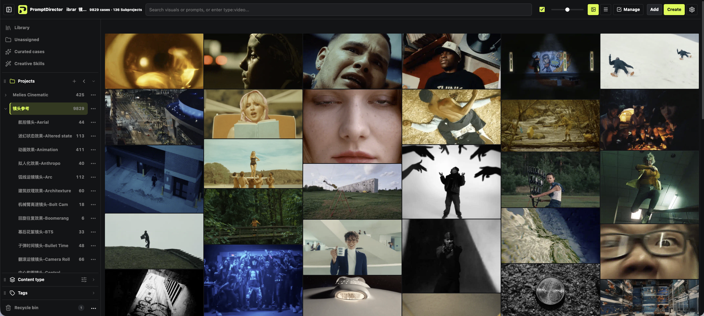
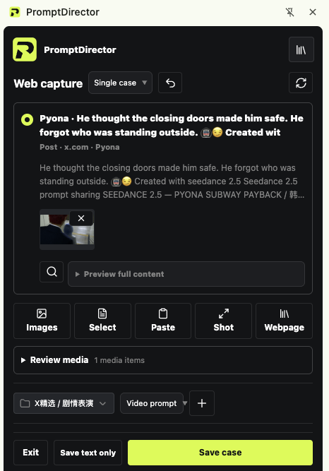

Capture the work and its clues
One click keeps the image or video together with the publicly available prompt, the source page, the author and the capture time — not just a screenshot.
Chrome extension · free · local-first
PromptDirector keeps the work and the creative clues behind it. Open a work, post or article, capture it, and the image, the video, the original prompt and the source page land in a private library on your own machine — ready to find, reuse and hand to your AI agent.

Most prompt tools start from an empty box. The references you actually want are already out there — in a gallery post, a tweet, a video breakdown. PromptDirector works where you find them.
One click keeps the image or video together with the publicly available prompt, the source page, the author and the capture time — not just a screenshot.
Cases, media, tags, Creative Skills and settings live in your browser's local storage. No account, no analytics, no developer-operated data server.
Browse visually, filter by content type and tags, sort by project, and keep multi-image works, article structure and table layouts intact.
Extract reusable Creative Skills, compose new images or video through your own AI service, and let a local MCP agent search, read and save into the same library.
Plus general webpage capture, text and image selection, screenshots, and local imports — images, videos, audio, DOCX, PDF, Markdown, HTML and RTF, including DOCX text, tables and embedded images. Multi-case posts can be split into individual image-and-prompt groups, and a whole article can be saved with its structure.
The screenshots below come from PromptDirector 1.26.0 with the interface in English; only the composer image still shows an earlier build. PromptDirector follows your Chrome language, so your own copy matches your browser.


Free to use. If you want your reference library to be structured data instead of a folder of screenshots, install it and save your first case — it takes about five minutes.